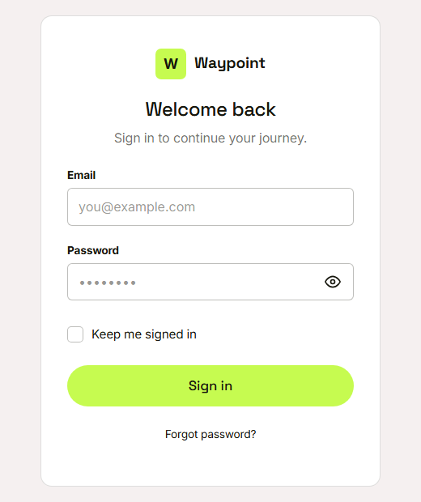
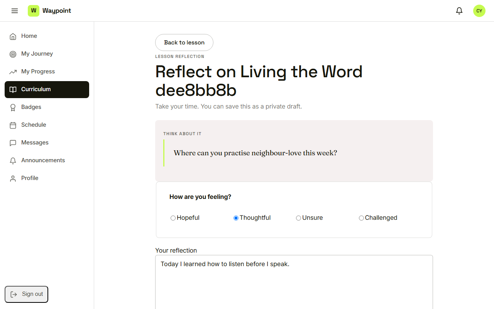
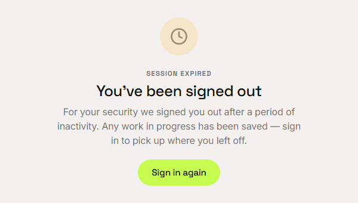
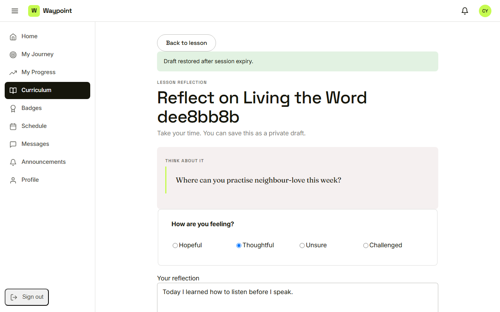

Waypoint · Video 004
Signing out and session expiry
Safe on shared computers
Back to the sign-in page

Nothing left to see without signing in
Work in progress

A reflection being written
You've been signed out

Any work in progress has been saved
Draft restored

Draft restored after session expiry
Things to remember
- Sign out closes the session and leaves nothing behind
- An idle session ends by itself
- The person sees a clear signed-out page
- Work in progress is restored after signing in again